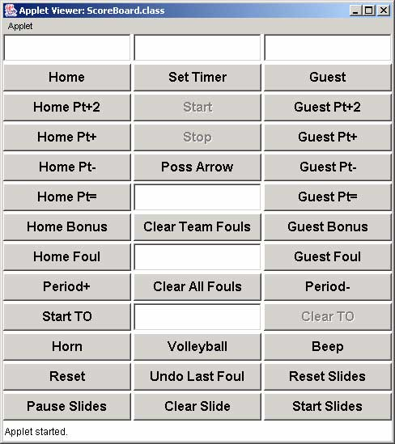
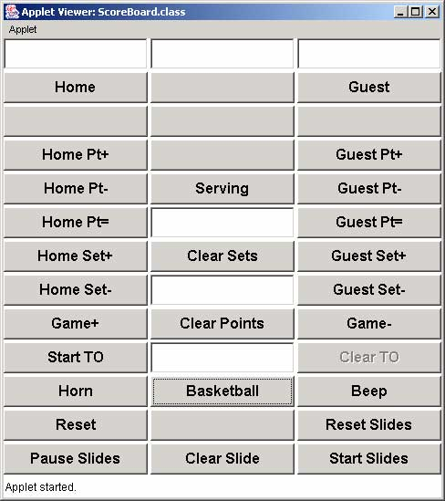

Version 3.5 - January 6, 2009
Included in this distribution is a file called "RUN.BAT" which is used to start the scoreboard on Wintel PCs. If you don't know what you're doing, start there and you'll be able to figure it out.
This program is free software; you can redistribute it and/or modify it under the terms of the GNU General Public License as published by the Free Software Foundation; either version 2 of the License, or (at your option) any later version.
This program is distributed in the hope that it will be useful, but WITHOUT ANY WARRANTY; without even the implied warranty of MERCHANTABILITY or FITNESS FOR A PARTICULAR PURPOSE. See the GNU General Public License for more details.
You should have received a copy of the GNU General Public License along with this program; if not, write to the Free Software Foundation, Inc., 59 Temple Place - Suite 330, Boston, MA 02111-1307, USA.
The following is a snapshot of the scoreboard display in volleyball mode.
The following are snapshots of the control window in both basketball and volleyball mode (note that you will only see one of these at any time, not both). This is displayed on the desktop so that the operator can interact with it.
|  |  |
| Basketball Controls | Volleyball Controls |
These buttons are used to customize the team's name in the upper text boxes on the scoreboard. Enter the team's name in the data entry field above this button, then click this button to update the scoreboard. The text fields can also be used by the operator to help keep track of the team colors.
This button is used to set the clock on the scoreboard. There is a data entry field above this button where the user can enter the desired time in the format Minutes:Seconds.Tenths (such as 5:00 for five minutes, or 10.2 for ten and two tenths seconds). This button is only available in basketball mode.
These buttons are used to add 2 to the point total on the scoreboard. These buttons are only available in basketball mode.
This button is used to start the clock. This button is only available in basketball mode.
These buttons are used to increment the point total on the scoreboard.
This button is used to stop the clock. This button is only available in basketball mode.
These buttons are used to decrement the point total on the scoreboard.
This button is used to toggle the position of the possession indicator. This button is only available in basketball mode.
This button is used to toggle the position of the serving indicator. This button is only available in volleyball mode.
These buttons are used to set the team's score to the value entered in the text field between the two buttons.
These buttons are used to toggle on and off the bonus indicator. These buttons are only available in basketball mode.
These buttons are used to increment the sets counters on the scoreboard. These buttons are only available in volleyball mode.
This button is used to increment the period indicator. There are 4 periods, then OT periods (OT, OT2, OT3...). This button is only available in basketball mode.
This button is used to increment the game indicator. This button is only available in volleyball mode.
This button is used to clear out the team foul counters. This is normally done at half-time. This button is only available in basketball mode.
This button is used to clear out the sets counters. This button is only available in volleyball mode.
This button is used to decrement the period indicator. This button is only available in basketball mode.
This button is used to decrement the game indicator. This button is only available in volleyball mode.
These buttons are used to track fouls. There is a data entry box between these two buttons that is used to enter a player number, then by clicking on the appropriate button, that team's foul count will be incremented and the "Last Foul" field will be filled in with the player number and the number of fouls that player has. This is kept in a database which is stored in memory. Use the "Clear All Fouls" button to clear out this database, use the "Clear Team Fouls" button to reset the team fouls counters without clearing the personal foul counters for each player. This button is only available in basketball mode.
These buttons are used to decrement the sets counters on the scoreboard. These buttons are only available in volleyball mode.
This button is used to play the long horn sound that is used to indicate the end of a period.
This button is used to switch the mode of the scoreboard from basketball to volleyball. This will reset the fouls database and all other data on the scoreboard, so use this button only when you want to switch modes. This button is only available in basketball mode.
This button is used to switch the mode of the scoreboard from volleyball to basketball. This will reset all the data on the scoreboard, so use this button only when you want to switch modes. This button is only available in volleyball mode.
This button is used to play the short beep sound that is used to indicate the end of a time-out.
This button is used to clear out the fouls database completely. This button is only available in basketball mode.
This button is used to clear out the point counters. This is intended for use when one game completes after incrementing the sets counter for the team that won the last game. This button is only available in volleyball mode.
This button is used to start a time-out using the value in the text box next to this button. After clicking this button, an internal timer is set and started, and the "Clear TO" button is enabled. When this timer finishes, the beep sound is heard and the "Start TO" button is enabled. The timeout timer is displayed where the bonus indicators are in basketball mode.
This button is used to stop a time-out that is currently in progress. After clicking this button, the internal timer is reset and the "Start TO" button is enabled and this button is disabled.
This will reset all the data on the scoreboard, so use this button only when a game has completed and when you want to start from scratch.
This button allows the operator to undo the last foul entered. This is a single-level undo which means that you can only do one undo, then the capability is disabled. This button is only available in basketball mode.
This button is used to re-read the slides and announcements.txt file. This is commonly used after a game has completed and the results are entered and saved in the announcements.txt file.
This button is used to pause the slide show on the current slide.
This button is used to blank out the slide area and pause the slide show.
This button is used to start the slide show after it has been cleared or paused. If the slide show is running, this button will move it to the next slide.
Sets the number of regulation periods used for the basketball mode. Default is 4.
Sets the background color of the areas of the scoreboard where text is displayed. This is a 6-digit hexadecimal representation similar to the color specifications in web pages. Default is 000000 which is black.
Sets the color of the timer text. Default is ffff00 which is yellow.
Sets the size of the timer text. Default is 100.
Sets the color of the timer text when the clock is under one minute. Default is ff0000 which is red.
Sets the color of the score. Default is 00ff00 which is green.
Sets the size of the score. Default is 90.
Sets the color of the other text such as team name, etc. Default is ffff00 which is yellow.
Sets the color of the area around the text areas. Default is c0c0c0 which is a light gray.
Sets the color of the bonus indicator. Default is ff0000 which is red.
Sets the color of the possession arrow (or serving) indicator. Default is ff0000 which is red.
Sets the font used for the scoreboard. Default is Helvetica.
Directory where the slide show GIF files are stored. There is no default value, but this is usually set to "./slides/".
Number of slides in the slide show directory. Default is 3. The slide files are stored in GIF format and must be named Nslide.gif where "N" is the slide number. Such as: 1slide.gif, 2slide.gif, 3slide.gif
This selects the amount of time in seconds to display each slide. Default is 10 seconds.
Selects the left-to-right position of the scoreboard window. Depending on the configuration of the two monitors, this could be a negative or positive value. The value of this field depends on how the two monitors are setup. If the main screen is to the left, then this will be a positive value about 4 less than the width of the main screen. If the main screen is to the right, then this will be a negative number about 4 more than the width of the window (804, that is). The default is 340 which normally places it on the same screen as the control window.
Selects the top-to-bottom position of the scoreboard window. Depending on the configuration of the two monitors, this could be a negative or positive value. The default is 0 which normally places it at the top of the screen.
TITL=This is the title of the first announcement MSG1=This is the first line of text MSG2=and the second MSG3=and the third MSG4=and the last TIME=7 TITL=Second Slide MSG1=This is the first line of text MSG2=and the second TIME=10A maximum of 50 announcement "slides" can be created in this file. If more are included, they will be ignored.